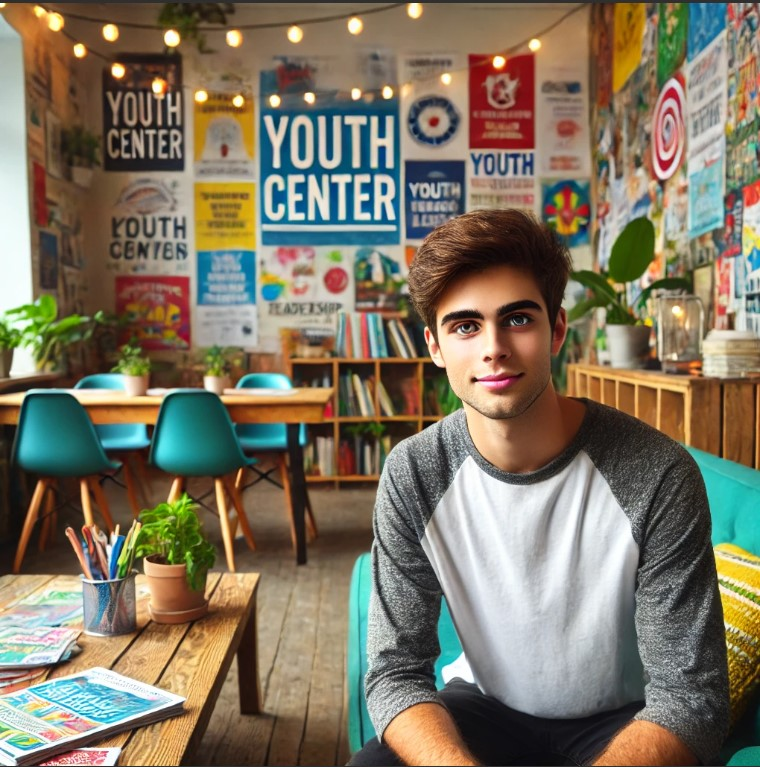

Александър Иванов винаги е носил в сърцето си дълбоко съчувствие към хората и силен стремеж да бъде полезен на обществото. Още от ранните си студентски години в Софийския университет, докато изучаваше социални науки, той усещаше как го привличат темите за младежките проблеми, социалната справедливост и начините, по които може да се подкрепи развитието на младите хора. Лекциите за социални политики, психология на развитието и методи за работа с общности го вдъхновяваха и затвърждаваха убеждението му, че неговото бъдеще е свързано с помагането на другите. Той вярваше, че обществото има отговорност да подкрепя младите хора, които са бъдещето на всяка нация, и че всяка инвестиция в тяхното развитие е инвестиция в просперитета на цялото общество. Александър осъзнаваше, че младостта е период, изпълнен с предизвикателства и възможности, и че правилната подкрепа може да насочи младите хора към успешен и пълноценен живот. След успешното завършване на висшето си образование, Александър не се поколеба дълго, преди да потърси възможност да приложи знанията си на практика. Той бързо намери своето място в неправителствената организация "Бъдеще за младите" – организация, която се беше утвърдила като важен фактор в подкрепата на младежи в риск и насърчаването на тяхната активност. Работата там не беше просто професия, която му осигуряваше препитание; тя беше неговото призвание, дълбоко вътрешно убеждение, че може да допринесе за по-добър свят. Той виждаше в работата си възможност да бъде мост между младите хора и обществото, да им помогне да преодолеят бариерите и да реализират потенциала си. Александър вярваше, че всеки млад човек има уникални качества и таланти, които могат да бъдат развити с подходящо напътствие и подкрепа. Всяка сутрин Александър пристигаше в младежкия център "Бъдеще" с енергия и ентусиазъм. Самата сграда, макар и не голяма, излъчваше топлина и приветливост. Слънчевите лъчи, проникващи през прозорците, осветяваха цветните рисунки и плакати, създадени от младежите, които посещаваха центъра. Атмосферата беше изпълнена с надежда и вяра в бъдещето. Александър вярваше, че всеки ден му носи нова възможност да промени живота на някого, да му подаде ръка и да го насочи в правилната посока. Той се радваше на динамиката на работата, на срещите с различни хора и на възможността да бъде част от позитивна промяна. Той намираше вдъхновение във всеки малък успех на младежите, с които работеше. В първите си дни на работа той имаше късмета да се срещне с Мария Петрова – лъчезарна студентка, която вече повече от две години доброволстваше в центъра. Нейната отдаденост и страст към работата с млади хора бяха заразни. Мария беше изключително мила, винаги усмихната и притежаваше невероятната способност да разбира нуждите на всеки млад човек, който прекрачваше прага на центъра. Тя имаше интуитивен подход и умееше да създава усещане за доверие и сигурност. Нейната енергия и позитивизъм вдъхновяваха всички около нея. Мария беше пример за това как младите хора могат да бъдат активни участници в обществото и да допринасят за неговото развитие. „Добре дошъл, Александър!“ - каза тя с топла усмивка, когато се запознаха. Гласът ѝ беше мек, но изпълнен с енергия. - "Надявам се да ти хареса тук. Работата ни е предизвикателна, понякога доста изтощителна, но е изключително удовлетворяваща. Няма нищо по-хубаво от това да видиш как помагаш на някого да повярва в себе си и да постигне целите си." Александър кимна с разбиране и огледа малката, но уютна сграда на центъра. Стените бяха окичени с пъстри постери, рекламиращи различни инициативи – от вдъхновяващи обучения по лидерство и комуникационни умения до практически насочени кампании за подкрепа на млади безработни и такива, които търсеха първата си работа. Имаше и информационни табла за възможности за стаж, доброволчество и обучения в чужбина. В този момент той почувства силна връзка с мястото и разбра, че е попаднал на правилното място, където може да реализира своите идеали. Той усети, че тук ще може да използва знанията и уменията си, за да направи реална разлика в живота на хората. Той беше впечатлен от ангажираността на екипа и от разнообразието на дейностите, които се предлагаха в центъра. Мария го въведе в основните дейности на центъра, запозна го с екипа от отдадени професионалисти и доброволци, и му разказа за различните програми, които се предлагаха. Той научи за индивидуалните консултации, груповите тренинги, менторските програми и проектите за социално включване. Всяка от тези дейности имаше за цел да подпомогне младите хора да развият своите умения, да повишат самочувствието си и да намерят своето място в обществото. Александър се впечатли от разнообразието на програмите и от холистичния подход на центъра към проблемите на младите хора. Той осъзна, че центърът не само предоставя услуги, но и създава общност, в която младите хора се чувстват приети и подкрепени. Първите седмици минаха бързо. Александър се потапяше във всяка задача с ентусиазъм. Той помагаше при организирането на събития, участваше в провеждането на обучения и започваше да изгражда връзки с младежите, които посещаваха центъра. Той се впечатляваше от тяхната енергия, креативност и желание за развитие, но същевременно осъзнаваше и предизвикателствата, пред които те се изправяха – безработица, липса на възможности, социална изолация, проблеми в семейството. Той виждаше колко лесно младите хора могат да се обезкуражат и да загубят вяра в себе си, ако не получат нужната подкрепа. Той беше решен да бъде човекът, който ще им подаде ръка и ще им помогне да намерят своя път. Един следобед, докато разглеждаше архива на центъра, Александър попадна на стари снимки и истории на млади хора, на които центърът е помогнал в миналото. Тези истории бяха вдъхновяващи и му дадоха още по-голяма мотивация да продължи напред. Той видя как работата на екипа е променила живота на много млади хора, давайки им шанс за по-добро бъдеще. Тези истории бяха доказателство за смисъла на неговата работа и го зареждаха с енергия. Той осъзна, че работата му има реален и видим ефект върху живота на хората. Александър осъзнаваше, че работата му е свързана не само с решаване на конкретни проблеми, но и с изграждане на доверие и създаване на подкрепяща среда, в която младите хора да се чувстват сигурни и разбрани. Той вярваше, че всеки човек има потенциал и че с правилната подкрепа може да го разгърне. Той се стремеше да бъде не само социален работник, но и ментор, приятел и вдъхновител за младите хора, с които работеше. Той знаеше, че е важно да бъде търпелив, да изслушва и да разбира техните нужди и страхове.
